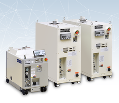
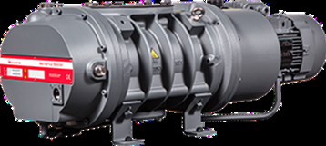
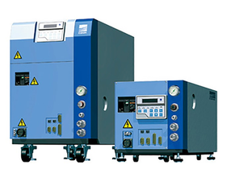

各式真空 PUMP 維修保養、中古機及零配件販售，點擊卡片查看各品牌維修實績細節。

原廠出身技術團隊，提供完整拆解、洗淨、研磨、組裝測試維修流程。
查看維修實績 →
針對 Edwards 系列幫浦提供精密檢修、防鏽處理與出貨前完整測試。
查看維修實績 →
提供 EBARA 幫浦全機檢測、單體拆卸與細部研磨等專業維修服務。
查看維修實績 →PUMP 進場序號登記與外觀拍照存證。
PUMP 檢修測試與單體拆卸。
高溫噴射洗淨、拋光研磨處理。
PUMP 組裝測試，封裝出貨。